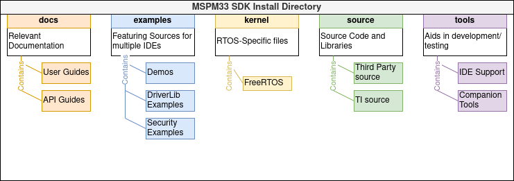
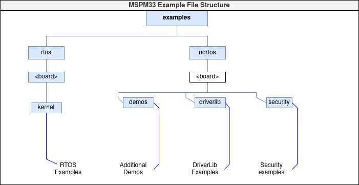
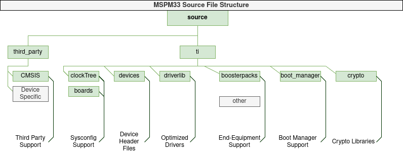

SDK 概述¶
MSPM0 SDK 提供了软件、工具和文档的精选集合，可以加快 MSPM0 MCU 平台应用程序的开发。该软件旨在实现卓越的性能和存储器利用率，通过单个软件包下的各种驱动程序、库和易于使用的示例提供协调一致的体验。
1.SDK 组件和架构¶
SDK 的主要特性如下：
1.1 驱动程序和支持文件¶
支持 Arm Cortex M0+ 核心和所有 MSPM0 器件，完全支持其相应的 EVM 和外设。
DriverLib层由综合低层驱动程序组成，为所有器件功能提供支持，并针对性能和低存储器占用空间进行更好的优化。 随时可用的器件头文件。 * 在适用的情况下，TI-Drivers 提供更高层次的硬件运行和核心功能，降低代码复杂性，同时实现通用和差异化的 MCU 功能。TI-Drivers 可以选择使用 RTOS，并且与其他 TI 平台（例如 SimpleLink）之间的兼容性更出色。
1.2 RTOS 支持¶
MSPM0 SDK 支持 FreeRTOS，包括驱动程序移植层 (DPL) 和 POSIX，从而可以更容易地在内核之间迁移。RTOS 的使用是可选的。
与广受欢迎的 FreeRTOS 内核集成。
驱动程序移植层 (DPL) 将驱动程序分离出来，从而在不同的 RTOS 内核或非 RTOS 内核之间更轻松地迁移。
POSIX 层将 RTOS 功能分离出来，从而可以更轻松地迁移至新内核。
1.3 中间件¶
库和协议栈中包括了各种中间件，用于不同的应用和领域，如汽车、电器、建筑和工厂自动化等。使用驱动程序层来开发中间件，从而提供一致且兼容的体验。
如需了解受支持的中间件列表，请参阅 MSPM0 SDK 文档概述
1.4 代码示例¶
MSPM0 SDK 丰富的代码示例涉及所有级别，不仅可用于演示和测试器件功能，还可以提供参考并作为起点，以加快应用程序开发。代码示例包括受支持的 IDE 和编译器的相应文件。要了解更多有关所提供示例的信息，请查阅 MSPM0 SDK 示例指南
示例包括：
DriverLib：简单易用的模块化示例，用于展示 MSPM0 功能
指导手册：展示使用多个外设实现基本功能的示例
中间件：展示多个中间件的示例
演示：集成的即用型演示
RTOS：使用内核功能的示例
等等…
1.5 软件开发工具¶
TI 和第三方的各种工具均支持 MSPM0。更多信息，请访问 MSPM0 工具指南。
SysConfig 是一个简单易用的工具，便于通过直观的图形界面来配置器件外设。它可简化任何 MSPM0 封装的 PinMux 输出，并自动生成用于开发的配置代码。要了解更多信息，请访问 将 SysConfig 与 MSPM0 搭配使用。
Code Composer Studio (CCS)、Keil 或 IAR 等集成开发环境 (IDE) 让用户从示例或指导手册入手，使用 SDK 开发自己的自定义应用程序。
支持多个编译器，包括但不限于 CCS 支持的 TI Arm Clang 和 Arm GCC。
支持多个调试器和编程器，包括 XDS-110、IAR I-jet、Segger J-Link、Keil ULINK、MSP-GANG 等。
1.6 培训内容¶
通过易于使用的教程和培训，比以往更快地入门。
MSP 学院 是所有开发人员了解 MSPM0 MCU 平台的一个绝佳切入点。MSP 学院提供易于使用的培训模块，涵盖 MSP MCU 产品系列中的各种主题。如需更多信息，请访问：MSPM0 学院。
TI 高精度实验室是面向模拟信号链和嵌入式处理设计人员的综合性在线课堂。从基础知识到高级概念，我们合乎逻辑、排列有序且全面的教学方法既直观又实用。如需更多信息，请访问: TI 高精度实验室 - 微控制器。
2.SDK 结构¶
MSPM0 SDK 具有以下结构：

2.1.示例目录¶
示例文件夹具有以下结构：

为不同的 MSPM0 EVM 提供了现成的代码示例。
代码示例包括受支持 IDE（包括 Code Composer Studio、IAR Embedded Workbench for Arm 和 Keil MDK）和以下受支持编译器的相应文件：TI Arm-Clang、GNU Arm、Arm/Keil 编译器和 IAR Arm 编译器。
提供了完整的源代码，但一些中间件示例除外，由于许可限制，这些示例可能会作为预构建的二进制文件发布。更多信息，请查看 SDK 随附的 SDK 清单。
有关如何使用所有示例的更多详细信息，请查阅相应的 MSP 学院和中间件文档。
2.2.源目录¶
源文件夹具有以下结构：

提供了完整的源代码并可根据需要进行自定义，但一些中间件和第三方软件除外，由于许可限制，这些示例可能会作为预构建的二进制文件发布。更多信息，请查看 SDK 随附的清单。
更多信息，请查阅相应的中间件、第三方、MSP 学院和 SDK API 文档。
3.使用入门¶
要开始使用，请查阅 MSPM0 SDK 文档概述和 MSPM0 SDK 快速入门指南。